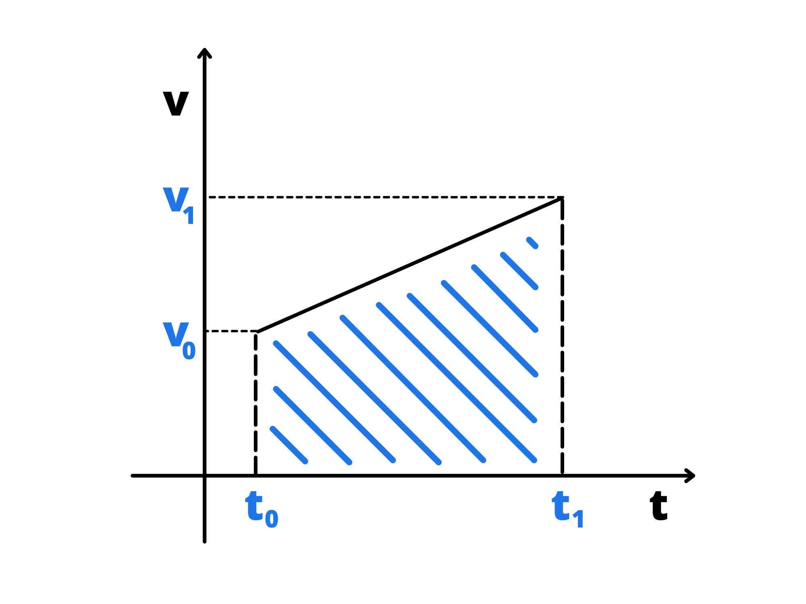

Il moto rettilineo uniformemente accelerato è sempre un moto che avviene su una retta, ma questa volta la velocità non è più costante. Introduciamo infatti una nuova grandezza fisica: l’accelerazione media. Se al tempo \(t_0\) il corpo ha una velocità \(v_0\) ed al tempo \(t_1\) ha una velocità \(v_1\), avremo:
\(a_m=\frac{v_1-v_0}{t_1-t_0}\)
L’accelerazione media è uguale al cambiamento della velocità diviso il cambiamento del tempo. Usando la notazione con i \(\Delta\), avremo:
Possiamo isolare \(v_1\) in funzione di \(t\) ed ottenere:
\(v(t)-v_0=a_m(t-t_0)\)
\(v(t)=v_0+a_m(t-t_0)\)
Siccome \(a_m\) è costante, possiamo riscriverla come una più generica accelerazione \(a\).
La formula appena trovata viene spesso chiamata “legge oraria della velocità di un moto rettilineo uniformemente accelerato”.
Come per il moto rettilineo uniforme, sarebbe molto utile trovare la posizione del corpo in funzione del tempo. Per fare questo dobbiamo guardare al grafico velocità-tempo:
Otteniamo un trapezio rettangolo. Si può dimostrare usando matematica più avanzata (infatti a scuola viene spesso dato come fatto caduto dal cielo) che l’area del trapezio è uguale allo spazio percorso.
L’altezza del trapezio è uguale al tempo trascorso \(\Delta t). La prima base è uguale a \(v_0\), mentre la seconda è uguale a \(v(t)\). Di conseguenza, usando la formula dell’area di un trapezio:
\(A={(b_1+b_2)\cdot h \over 2}\)
\(\Delta S = {(v(t)+v_0)\cdot \Delta t \over 2}\)
Possiamo usare la legge oraria della velocità per sostituire \(v(t)\):
\(\Delta S= \) \(\frac{(v_0+a(\Delta t)+v_0)\cdot (\Delta t)}{2}\)
\(S(t)-S_0=\) \(\frac{(2v_0+a(t-t_0))\cdot (t-t_0)}{2}\)
\(S(t)-S_0= \) \(v_0(t-t_0)+{a(t-t_0)^2 \over 2}\)
\(S(t)=\) \(S_0+v_0(t-t_0)+{a(t-t_0)^2 \over 2}\)
E questa è la legge oraria del moto rettilineo uniformemente accelerato.
Se poi abbiamo \(t_0=0\) e \(S_0=0\), la legge oraria si semplifica in:
\(S(t)=v_0t+{at^2 \over 2}\)
Legge oraria del moto rettilineo uniformemente accelerato usando la velocità media.
Riprendiamo la formula di prima:
\(S(t)-S_0=\frac{(v_0+v(t))\cdot (t-t_0)}{2}\)
Ovvero:
\(S(t)-S_0=\frac{v_0+v(t)}{2}\cdot (t-t_0)\)
Notiamo che la velocità media \(v_m\) è proprio uguale a \({v_0+v(t) \over 2}\) e quindi:
\(S(t)-S_0=v_m(t-t_0)\)
\(S(t)=S_0+v_m(t-t_0)\)
Questa formula è utile perché se tra i dati avete la velocità media vi permette di fare qualche calcolo in meno, ma non è fondamentale saperla. Le formula che dovete assolutamente ricordare sono la legge oraria della velocità e la legge oraria dello spazio (la formula ricavata nel paragrafo precedente).